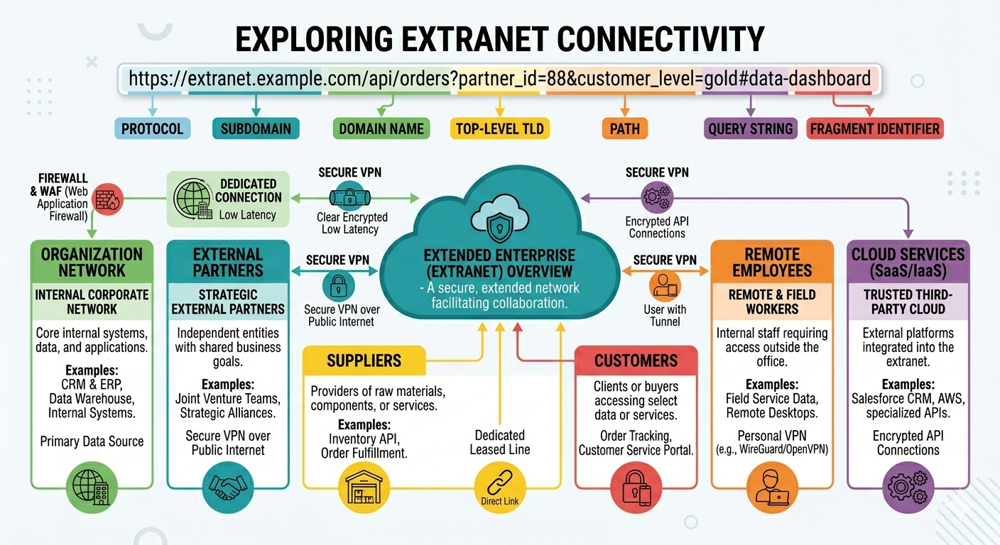

An extranet is a controlled private network that extends part of an organization's intranet to external parties such as suppliers, partners, customers, or other businesses.
Extranets enable secure collaboration and information sharing between organizations while maintaining boundaries around sensitive internal resources. They are widely used in B2B (business-to-business) contexts.

Extranet Connectivity Model
Extranet Use Cases: